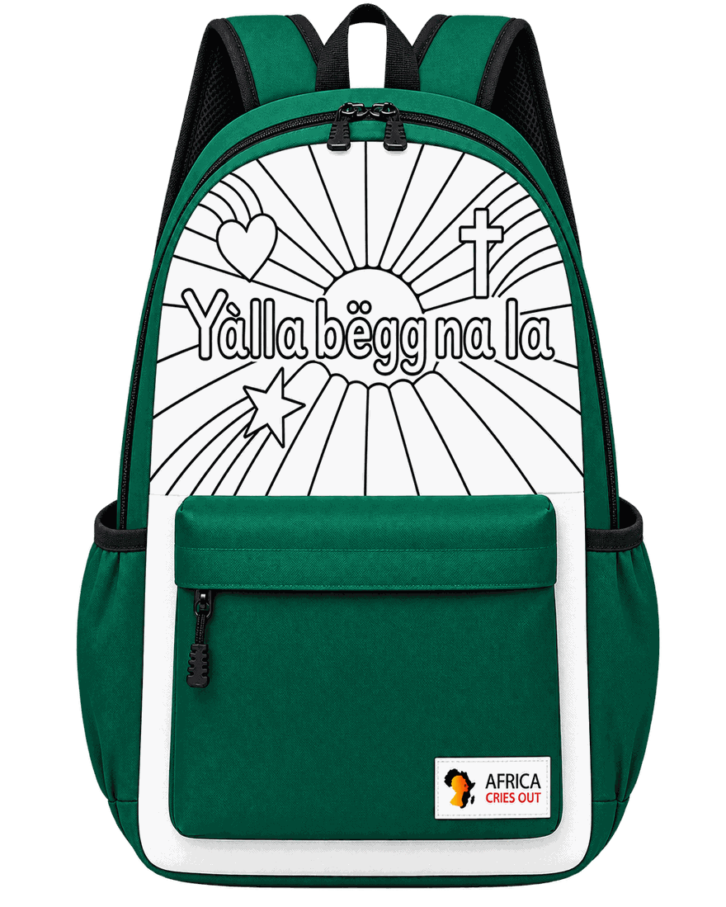

You are loved.
You are seen.
You are remembered.
You matter.
That's the message inside every backpack we make. Pack with Love is a service club run by kids — designing color-it-yourself backpacks and coloring books so that children far away can finish the creation we begin. We serve alongside trusted mission partners, one project at a time.
designed by kids, for kids — colored by the child who keeps it
The Love & Hope Backpack Project
1,000 color-it-yourself backpack sets for children across ten villages in Senegal — traveling with the March 2027 mission in partnership with Africa Cries Out.
The project supports ACO's Children's Hope & Care program — the children's side of each mission, where kids get Bible stories, songs, games, and crafts in a safe space while their families are seen at the clinic. Sets are packed at the ACO base and shared across about ten villages.
Our partner Africa Cries Out is a Christ-centered nonprofit bringing medical care, hope, and compassionate service to communities in Senegal:
This is the first project of a five-year founding roadmap — we learn from each project before deciding the next. See where we're headed →
Four things that belong together

Backpack
A child-friendly backpack with a theme-based coloring design each child can personalize.
Coloring Book
A matching book that connects to the backpack's artwork with Bible truths and encouragement.
Gospel Wordless Book
A simple, colorful book that shares the good news of Jesus with colors instead of words.
Coloring Set
The crayons and coloring tools that bring the backpack and book to life.
The Gospel Wordless Book
The good news of Jesus, told with colors instead of words — so it crosses every language barrier:
- Gold · Heaven
- Dark · Our sin
- Red · Jesus' love
- White · A clean heart
- Green · Growing with Jesus
Children's Hearts to Hearts
Pages created by our student designers to share joy and encouragement, child to child — the same quiet message across five thousand miles:
“I made this for you. I hope it brings you joy.”
One year, three phases
Design the gift, raise the means, deliver it in person. Join for one phase — or all three.
Design
Our five founding students — already underwayThe founding team designs the backpack art and coloring books — idea → design → produce → ship → give.
Raise
Open to everyone — this is your phaseOne shared $5,300 goal, three doors in:
Deliver
Optional · travel with ACOFamilies may join ACO's 2027 mission — serving in the Children's Hope & Care program as the backpacks are delivered, after pre-departure training led by a physician mentor — with Youth Medical Training (ages 10+) for students curious about medicine. What travelers bring home: seeing the world as it is · giving · gratitude · a glimpse of a future career.
There's a place for you here
Support a backpack
You give
$4.50 becomes one complete set. Every gift lands on the shared goal the moment it arrives — and every backpack is given unconditionally.
Give now →Kids raise it themselves
Learn · grow · give
Any child can claim a portion of the goal — ten or twenty backpacks alone, fifty to a hundred as a team — and carry it with a parent's guidance. A bake sale, a recital, a car wash. All effort, no debt.
Start a claim →The Data to Impact course
Learn · grow · give
24 sessions of project-based math: real surveys, real pricing, real sales — and the profit funds the backpacks. Taught by our lead teacher with mentors from Duke, St. John's, and industry.
Explore the course →Deliver it in person
You give — in person
Families may travel with ACO's March 2027 mission — packing sets at the base and serving in Children's Hope & Care as the backpacks reach the children. Every traveler completes a physician-led pre-departure training, and students 10+ can join ACO's Youth Medical Training — learning medicine directly from U.S. physicians.
See the trip →1,000 backpacks are waiting to be colored.
Give one, raise one, or help design the next one — every way in ends the same way: a child, five thousand miles away, learning they are loved.
How to join the club
Walk through either Phase 2 door and you're in — make a claim or enroll in the course — membership is automatic and always free. (Claimed on ACO's platform? Say hello at hello@packwithlove.org so we can welcome you.) Donors are cherished partners of the project; members are the kids who carry it.